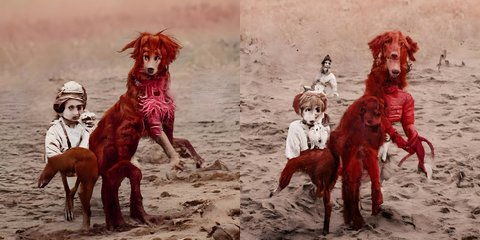

← Async Art — living works · all collections
by Mad Monk · Async Art Master #5925 · day/night · time rule: UTC
Updates twice a day to reflect day / night cycles.

Day 06:00–18:59 · Night 19:00–05:59 (UTC)
The viewer shows these states from display copies kept with this site (resized WebP files; the originals are the files below). The full-size files live on IPFS; each is linked on three public gateways, in the order to try them (gateway.pinata.cloud, ipfs.io, dweb.link). Every line says what our own check found: 3 we keep this file pinned, 1 our own copy, pinned here and verified on upload.
Qmdq6kd2ZDHUst… gateway.pinata.cloud · ipfs.io · dweb.link — we keep this file pinned, checked 2026-09-24 11:46QmRF3s9DmcFyUv… gateway.pinata.cloud · ipfs.io · dweb.link — we keep this file pinned, checked 2026-09-24 11:46bafybeifigcix3… gateway.pinata.cloud · ipfs.io · dweb.link — our own copy, pinned here and verified on upload, checked 2026-09-22QmasokRfSch6KQ… gateway.pinata.cloud · ipfs.io · dweb.link — we keep this file pinned, checked 2026-09-24 11:46Qmdq6kd2ZDHUst… gateway.pinata.cloud · ipfs.io · dweb.link — we keep this file pinned, checked 2026-09-24 11:46Qmdq6kd2ZDHUst… gateway.pinata.cloud · ipfs.io · dweb.link — we keep this file pinned, checked 2026-09-24 11:46QmRF3s9DmcFyUv… gateway.pinata.cloud · ipfs.io · dweb.link — we keep this file pinned, checked 2026-09-24 11:46Bestial Domination by Mad Monk 2 pieces in a Day/Night cycle Minted 1/1 on Async Art, May 2022 ... It is said that in the good days, the women "Hedras" (so called female dune racers) rode these hounds. ... The set of surreal images I've been working on date back to mid 2021. I've developed and added to them over the months. The minted pieces are a combination of those images, edits and AI intervention in the process.
async.art · OpenSea · Etherscan
Generated archive pages. Content identifiers point to the public IPFS network.